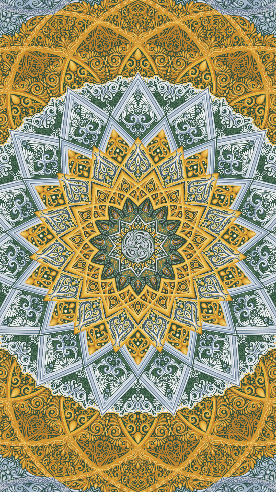
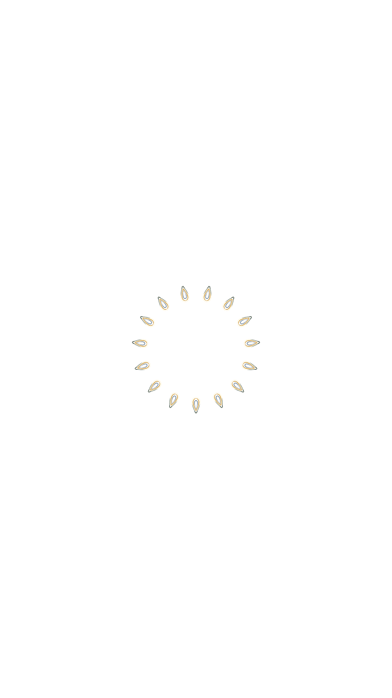

“[Willem] the lighting had been particularly golden, like beeswax (…) had been yellowish… like the skin of a late-fall apple. By contrast, Malcom’s world was bluish: his sterile, white-marble-countertopped office on Twenty-second Street… And Jude’s was graysh, but a silvery gray” - A Little Life, pages 276-277.
agora para greene street
HAND BELLS:
Hand Bells, Low-C, Single.wav by InspectorJ -- https://freesound.org/s/339815/ -- License: Attribution 4.0
Hand Bells, D, Single.wav by InspectorJ -- https://freesound.org/s/339813/ -- License: Attribution 4.0
Hand Bells, D#/Eb, Single.wav by InspectorJ -- https://freesound.org/s/339814/ -- License: Attribution 4.0
Hand Bells, F, Single.wav by InspectorJ -- https://freesound.org/s/339816/ -- License: Attribution 4.0
Hand Bells, G, Single.wav by InspectorJ -- https://freesound.org/s/339818/ -- License: Attribution 4.0
Hand Bells, A, Single.wav by InspectorJ -- https://freesound.org/s/339810/ -- License: Attribution 4.0
Hand Bells, A#/Bb, Single.wav by InspectorJ -- https://freesound.org/s/339811/ -- License: Attribution 4.0
Hand Bells, High-C, Single.wav by InspectorJ -- https://freesound.org/s/339820/ -- License: Attribution 4.0
Ich bin der Welt abhanden gekommen, Mahler, Public domain (via Wikimedia Commons).